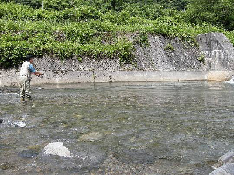
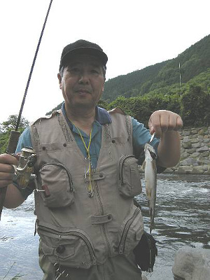
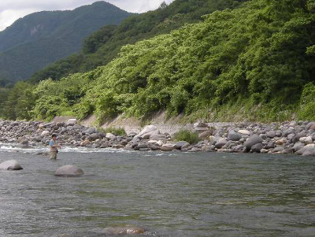
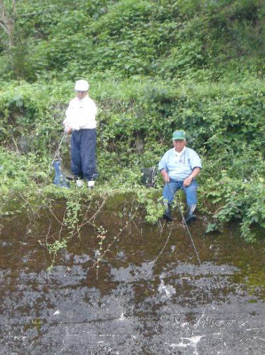
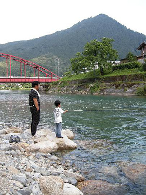

釣行日誌 故郷編
2009/7/4 振り返れば残雪の峰
叔父が約束通り早朝５時に私を迎えに来たので、今日はETCの付いている私の車で、地球温暖化に貢献しながら高速を一路北上する。高速を降りてしばらく国道を走ると、入漁券販売所という看板のあるコンビニを見つけたので、そこで入漁券と朝食を買うことにする。体重が増えすぎて、渓流を遡行するのに非常な困難を感じている私は、ダイエットをして少しでも痩せようと、昼食はおにぎり２個と野菜ジュースだけにとどめておいた。
道中、叔父は、先日知人宅で62cmという大岩魚の剥製を見せてもらった話しをひとしきりした後、
「俺もいっぺんでいいからあのぐらいのを釣りたいなぁ.....」
とつぶやく。そうしてしばらく走ると、叔父がふいに
「しまったなぁ」
とつぶやく。どうかしたの？と訊ねると、
「８ポンドのラインを巻いてあるリールを忘れた」
と、いかにも残念そうに答えた。大岩魚の剥製を見せつけられて、叔父のココロと思考はすでにそっちの方向に吸い寄せられてしまっているようだ。
今日は叔父のホームグラウンドなので、入渓地点は叔父が選んだ。その橋詰には、土曜日の朝にもかかわらず、先行者の車は停まっておらず、二人でいそいそと釣り支度を整える。橋詰の農道から土捨て場ぞいに川の右岸へ降りて、叔父は目の前の流れ込みを釣り始め、私は下流の荒瀬を攻めに釣り下る。
今日のこの川は、水は澄んでいたが少々増水気味であり、コンデックススプーンの8g銀色を結んで最初のキャストを始める。荒瀬が次の落ち込みへつながるあたりの丸石沿いにスプーンを引いてくると小さな黒い影が走り、ルアーを追って水面にまで飛び出した。
『くぅ～っ！ 岩魚だ、食わせきれなかったか！』
もう少しのところでフッキングせず、魚影は石の陰に戻ってしまった。一日の最初の１尾を逃すと、その日はあまりぱっとしない釣りになってしまうので、しきりに残念がるがどうしようもない。気を取り直して、上流の叔父の後を追う。
橋の下からは、流れが二股になっているが、叔父は太いほうの流れを先に釣ってみろと譲ってくれたので、お言葉に甘えて先行させてもらう。いいポイントが連続しているが、スプーンを追って付いて来るのは小学生サイズの岩魚やアマゴばかりである。
しばらく行くと大きな取水堰堤があり、その落ち込みでしつこくスプーンを沈めて引いてみるが、アタリは無い。叔父と二人、黙々と上流を目指す。

堰堤の上流は、ゴロタ石の沈んだ深みがかなり長く続いており、見るからに良さそうなポイントであった。ここでも叔父は私を先行させてくれたので、左岸側から静かに近寄り、沈み石の向こう側をめがけてスプーンを投げ込む。流れに乗せて沈め、大石の下流側をスプーンが通り過ぎる時に、黒い影がフラフラと現れ、ゆっくりと付いて来る。やや大きい岩魚だ。
『食え！ 食いつけっ！』
と念じてみたが、足もとまで付いてきただけで、ゆっくりとその岩魚はもとの岩陰へと消えていった。
『くっそ～っ！』
絶好のポイントで出た魚だっただけに、今のは釣りたかったと悔しがりつつ次の場所を攻める。小さな岩魚やアマゴはいっぱいスプーンの後を付いてくるが、ガツンとひったくるようなアタリが無い。対岸の護床ブロックの隙間にルアーを落とし込んで引いてみるが反応は無い。ふと振り向くと、下流を釣っていた叔父のロッドが曲がっている。あれれ？と思ってみていると、叔父がまずまずの型の岩魚を水面から引っこ抜いてしまった。思わず自分のロッドを置いて駆け寄ると、叔父は、
『どうだ！』
と言わんばかりに満面の笑みを浮かべて、振り向いた。

「釣れたねぇ！」
「ここはいいポイントだからな」
さっきまでしつこく攻めていたポイントで、後から来た叔父に見事に１尾釣り上げられ、内心極めて不穏ではあったが、精一杯とりつくろって、
「さすがは叔父さん！」
と誉め上げると、
「ま、こんなもんよ」
叔父は自信ありげに答える。スプーンとミノーの差が出たのかなぁ？などと負け惜しみを心中で吐露しつつ、そこからしばらく遡行し、大きな淵を越え、長い瀬の尻まで来ると、上流の対岸に餌釣りの人が見えた。竿は出さず、しきりと石をひっくり返して、どうやら川虫を採っているようだ。昨今では珍しい、本格的な餌釣り師である。向こうは対岸で餌、こちらはルアーなので、気にせずに上流へ行こうかと思っていたが、下流から叔父が、
「やい、人がおるで、別の所へ行くぞ」
と言ったので、そこから引き返すことにした。引き返す途中、河原の砂地に、カモシカらしい足跡を発見した。
いったん車まで戻り、車内のむっとした暑さに閉口しながらも、窓を全開にして夏の林道を上流へ走る。とある集落のバス停のところから農道に入り、狭い道をクネクネと降りてゆくと、空き地には釣り人らしき車が２台停まっている。川を覚える意味もあって、先行者にはかまわずに小橋から入渓する。ここにも堰堤があり、上流から流れが二股に分かれている。叔父が下流の堰堤の落ち込みを攻めている間、右岸側の深みをブレットンのスピナーで探り、反応が無いので今度は左岸側の細い流れを試してみた。すると、小さな魚影が岸沿いの藪の下からルアーを追ってきた。食い付くか？食い付くか？と思って見ていたが、どうやらスピナーを気に入らなかったようで、反転して藪の方へと戻っていった。
二股の流れが始まっている護床ブロックまで来ると、叔父が後から追いついて来て、さっきの藪下にミノーを投げている。
『そいつは無理だらぁ.....』
と思って見ていると、叔父のロッドがプルプルと震え、竿先で銀白色に輝くアマゴが踊った。
「・・・・・・・・・・」
ガーン！またしてもやられてしまった。これはもう、使っているルアーの差としか言いようがない。ところが私のルアーケースには、古い大きなプラグが二つあるだけで、叔父の使っている50mmクラスのミノーとは全然違うのである。ここでルアーを替えるのも癪だなぁと逡巡していると、叔父が、
「やい、人が居るで帰るぞ」
と上流を指さした。100mほど上流の堰堤では、一人のフライマンが落ち込みめがけてしきりとフライを打ち込んでいる。それじゃぁ、ということで、再び藪こぎをして農道に這いずり上がり、小橋を渡って車に戻る。今度はどこへ行こうかと二人で相談していると、川のすぐ脇に駐車場がある場所がいいなということになり、かなり下流の本流を攻めることとなった。
県道を戻り、叔父の知っている農道に車を乗り入れ、ちょっとした空き地があったのでそこへ車を停めた。土手を降りればすぐ川である。水際に降りると、すぐ目の前が開けた荒瀬になっており、ここから二人で釣り下ることにする。叔父はミノー、私は再びスプーンを結び、荒瀬の中の大石回りを攻める。本流の流れは広く、何も障害物は無いので思いっきりのびのびとキャスティングを楽しむ。丸石が並んだ対岸の水際ぎりぎりにスプーンを落とし、少し沈めてからリーリングを始める。スプーンが腰を振る動きが竿先に伝わり、青みがかった本流の深みを通過してくる。が、何も起こらない。自然と釣り下るペースが速くなって、一人どんどんと下流へ進む。振り返ると、叔父が黙々と流れ込みの深みを狙ってミノーを投げている。

背景には、残雪を頂いた峰々が雲間から姿を見せる。清冽な山と渓の空気の中で、何も考えずにひたすら竿を振るこの幸せよ......などと一人で悦に入っていると、またしても叔父のロッドが曲がった。下流へ走る魚をこらえながら、こちらを見てニカッと笑っている。叔父が水から抜き上げたのは、型の良いアマゴであった。
『うーん...あそこに居たかぁ...』
ザワザワと波立つ心持ちを押さえながら、再びキャストを始める。すると、またまた叔父が魚を掛けた。ファイトしながら叔父が、
「剛！ ミノーを貸してやるでこっちへ来い！」
と呼びかける。ここまで差を付けられては立つ瀬が無いので、しかたなく叔父の所まで戻る。叔父が魚を抜き上げると、型の良いアマゴが、ミノーのフックを口と尾に掛けてUの字になってもがいている。叔父は手際よくフォーセップでフックを外してアマゴをリリースし、
「これを使え。これなら釣れる」
と、赤い腹のミノーを貸してくれた。いつまでたっても甥っ子は甥っ子である。
叔父は、祖父と祖母の遅くなってからの子供で、私と年齢が八歳違い、私の長兄とは三歳違いである。私の父と母が結婚してから叔父が生まれたので、当時、近所では、父と母とはいまで言う「できちゃった結婚」ではないかと噂が立ったらしい。そんなことで、叔父と兄二人、私とは、まるで兄弟のようにいっしょに釣りをしながら育ってきたわけである。
広い荒瀬を下流まで釣っても反応が無かったので、こんどは入渓点のすぐ上流にある大淵を目指す。ここでは叔父の貸してくれたフローティングミノーでは沈ませきれないと感じたので、8gのコンデックスにルアーを替え、流れ込みにキャストして五つ数える。リーリングを始めるとすぐにコクン！とアタリがあり、心地よい振動と共に小振りのアマゴが上がってきた。サイズは大したことなかったが、自分で選んだスプーンで、淵の中から思い通りに１尾を引き出したので気分が良かった。後から追いついて来た叔父が、
「おう、スプーンに来たか！ ここは深いからな」
と言ってくれた。しばらく二人でその淵を攻めて見たが、それ以上の反応は無かったので、ここでこの川はおしまいにして、帰る途中のいくつかの川を見て回ることにした。
1時間ほど車で走ると、ダム湖の流れ込みにやって来た。ここでは昔、アマゴの尺クラスを目撃したことがあったのだ。足場は良いのでスタスタと二人で水辺に降りてルアーを投げ込む。よく見ると、足下の弛んだ深みには、ウグイがいっぱい群れている。
『小魚目当てで大物が潜んでいないかな？ 居れば一発で来るがなぁ...』
などと虫のいいことを考えつつ、スプーンを遠投する。流れ込みの流心めがけて投げ込んだスプーンを、思いっきりカウントダウンして沈め、大きめのアクションをつけて引いてくると、ガツンとアタリがあった。
『やったね！』
と、内心ほくそ笑みながら魚を寄せてくると、なんと銀白色をしたウグイであった。がっくりである。叔父は、バックウォーターからやや遡行して、上流側を探りに行った。
さっきから気にはなっていたのだが、対岸の高いコンクリート護岸の上には、地元の人とおぼしきおじさんたちが二人で、長い延竿を使ってしきりとなにか小魚を釣り上げている。釣り上げられている魚は、腹が赤く見え、ウグイかと思われたが、さっき釣り上げたウグイには婚姻色は出ていなかったので、それが不思議に思われた。おじさんたちは、魚籠とバケツを持ち込んで、ウキ釣りで次々と小魚を釣り上げ続けている。あんなのんびりとした釣りもいいなと思う。

などと対岸を見つめつつ、ひたすらスプーンを投げては引いていると、今度は若いお父さんが息子さんを連れて雑魚釣りに来たようだ。小学校二年生ぐらいに見えるお子さんは、釣りが初めてか、これまでに数回ほどやってみたぐらいのようで、竿を振る手がおぼつかない。深みを狙ってウキ下を長くとってあるので、ウグイが群れているあたりまで投げ込むのは少々難しそうだった。
その親子連れの姿を見ていると、自分の少年時代がくっきりと思い出された。私は小学校三年生の時からアマゴ釣りを覚え、父が自宅近くのあちこちの川によく連れて行ってくれたものである。深い荒瀬を渉る時には、父は私をおぶって川を横切った。数えてみると、あの頃父は40歳だった計算になる。今の私よりもずいぶん若かったのだ。父に背負われて川を渡る時のスリルと、背中の広さの安心感が、その親子連れの姿で鮮やかによみがえった。

粘り強く上流を攻め続けていた叔父が戻ってきたので、ここはこのぐらいで切り上げ、本日最後のポイントへ車で移動する。さらに下流域の本流で、出れば尺物と言われている区間である。今朝来る時に目を付けておいた河川敷公園に車を乗り入れ、叔父と二人、大岩の立ち並ぶ本流へと小径を降りてゆく。ずっしりとした重い流れは、いかにも大物が潜んでいそうな気配である。川の規模も大きく、水深もあるので、やや重め、12gの銀色のコンデックスを結んで遠投する。叔父は上流の流れ込みを狙いに行った。
大岩の背後の淀み、延べ竿やフライキャスティングでは届かない、対岸の深みなどを狙ってみるが、反応は無い。渕尻の石の陰からなにか動くものが見えたので、これは！と期待したが、手のひらサイズのアマゴがスプーンについて来て、パクリと食い付いた。居ることは居るようだ。サイズは別にして。
と、上流の叔父が、対岸の上方を指さして、何か私に呼びかけている。叔父が指さす方を振り向き、目を凝らしていると、石垣沿いに茶色の固まりが動いている。ニホンザルである。群れから離れた元のボスザルか、単独で行動しているようだった。叔父の方をむき直して、笑って見せると、叔父もニッカリ微笑んだ。
さらに下流に釣り下ると、下の淵の頭に、長い渓流竿を持った餌釣りの人が一人見えた。あの人も本流の一発大物狙いに来ているらしい。誰も考えることは一緒かなと、ちょっと可笑しくなった。
しつこくしつこく色々なポイントを探ってみたが、さっきのちびアマゴ以来、まったく反応が無い。叔父も同様である。ここら辺りは大岩が河原にゴロゴロしており、釣り下るのも一苦労である。この辺が潮時かなと、叔父の来るのを待ち、
「叔父さん、そろそろ上がるかねぇ」
と呼びかける。
「おお、そうするか」
ついに本流の大物には出会えなかったけれど、一日、気分良く竿を振ることができた。帰り道、河川敷の公園で、若いご夫婦が、フリスビーで犬と遊んでいるのを見た。テレビで見たことはあったが、フリスビー犬というのを初めて見たので、その妙技にとても感動した。私も若いころからフリスビーで遊ぶのが大好きだったので、あんな犬が居たらずいぶんと人生が楽しくなるだろうなぁと思った。
帰りの車の中では、二人で昔の釣りの自慢比べをしながら長いドライブを楽しんだ。
「60cmとは言わないから、せめて40cmクラスが釣りたいなぁ」
「叔父さんの使っている３ポンドラインじゃ心もとないよね」
あてのない希望に胸はふくらみ、二人とも次回の釣行にココロが飛んでいるのであった。
釣行日誌 故郷編 目次へ
サイトマップ
ホームへ
お問い合わせ